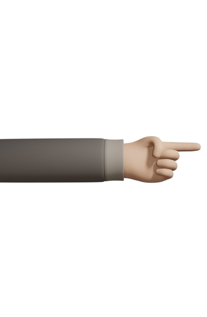

<section id="about">
    
    <div class="container abt-cntr">
        <div class="row">
            <div class="col-10 about-context">
                <h2><span>T</span>his is it. ;)</h2>
                <p>
                    Prathikantam Anusha is an Indian <strong>UI/UX Designer & Front End Developer</strong>
                    with a passion for designing beautiful and functional user experiences.Typically, she's driven and permanently curious.She's obsessed with designing things and even more obsessed with designing cool & clean stuff for the web and mobile. She has been in the business of creating since she hung her first painting on the wall. 
                </p>
                <p>
                    She holds a <strong>bachelor degree in Mechanical Engineering</strong>. During her graduation, she has been actively involved in the web design community for the last 3 years. She has designed websites for small businesses, events, nonprofits and more. Currently she is based in <strong>Hyderabad</strong>. Where she is working as an Independent creative. 
                </p>
                <p>
                    Her interests, however, extend beyond the web and she loves helping people with branding and print design. She even loves to design <strong>3D Assembly Models</strong>.
                </p>
                <p>
                    When she is not designing, she's probably Sketching, Watching Motivational videos or messing around on something inspired by YouTube tutorials.
                </p>
                <hr class="mt-5">
            </div>
        </div>
    </div>
    
</section>